Chapter 19 — Completing a Well
After the hole is drilled and logged you either plug and abandon it, or you spend more money than the drilling already cost and turn it into a producer by setting pipe. An open, mud-filled hole cannot produce: walls cave, aquifers mix with brine, and reservoir fluid has no controlled path to surface. Completion is that controlled path—casing, cement, perforations, tubing, tree, and often artificial lift.
Learning goals
- Describe the casing program (conductor → surface → intermediate → production / liner) and why cement must go all the way around.
- Contrast open-hole, gravel-pack, and set-through (perforated) bottom-hole completions.
- Explain tubing + packer roles versus casing, and name the main artificial-lift methods.
- Connect the completion chain that matters for frac: cement → set-through pipe → perforations (spf and phasing).
Casing
Casing is thin-walled steel pipe made up joint-by-joint (~30 ft) into a string whose OD is at least 2 in. smaller than the hole, so an annulus remains for cement. You run it and cement it to the wall so the hole does not collapse, freshwater stays clean, and water from other formations cannot dilute the pay. The drilling rig can run it; if that rig’s day-rate is huge you release it and a cheaper completion rig does the same job.
API grades each joint by OD, wall, weight/ft, coupling, length and steel because the string must hang its own weight and survive collapse from outside and burst from inside. Threads stay capped until makeup; a short fatter collar joins two joints.
Before cement you clean the hole, not just dump slurry: a used bit and circulation lift leftover cuttings; scratchers scrape filter cake so cement bonds to rock instead of mud; cement baskets and similar accessories help hold slurry where you want it.
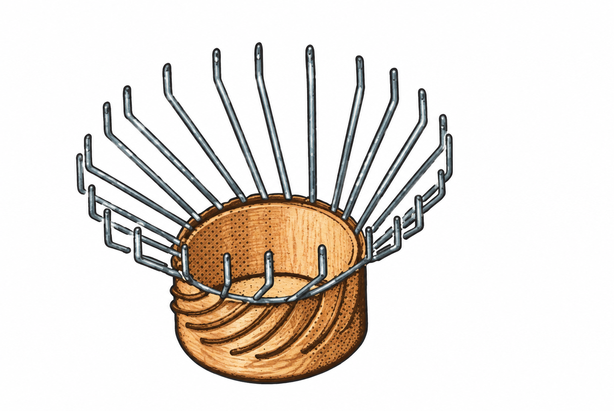
Centralizers hold the pipe in the middle; if it lies against one side, cement never goes all the way around and you leave a channel.
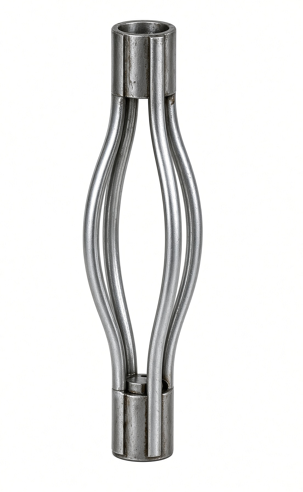
A casing crew stabs each joint up the V-door, makes it up with hydraulic tongs, and lowers it. A rounded guide shoe on bottom keeps the lead joint from hanging up. When the shoe is just off bottom, weight is landed on hangers in the casinghead so the derrick is no longer holding the pipe.
Cement slurry is Portland plus additives that change set time, density, strength, expansion, or plug a thief; the clock that matters is pumpability time, after which you cannot move it. A cementing head holds two wiper plugs so mud and cement never mix inside the pipe.
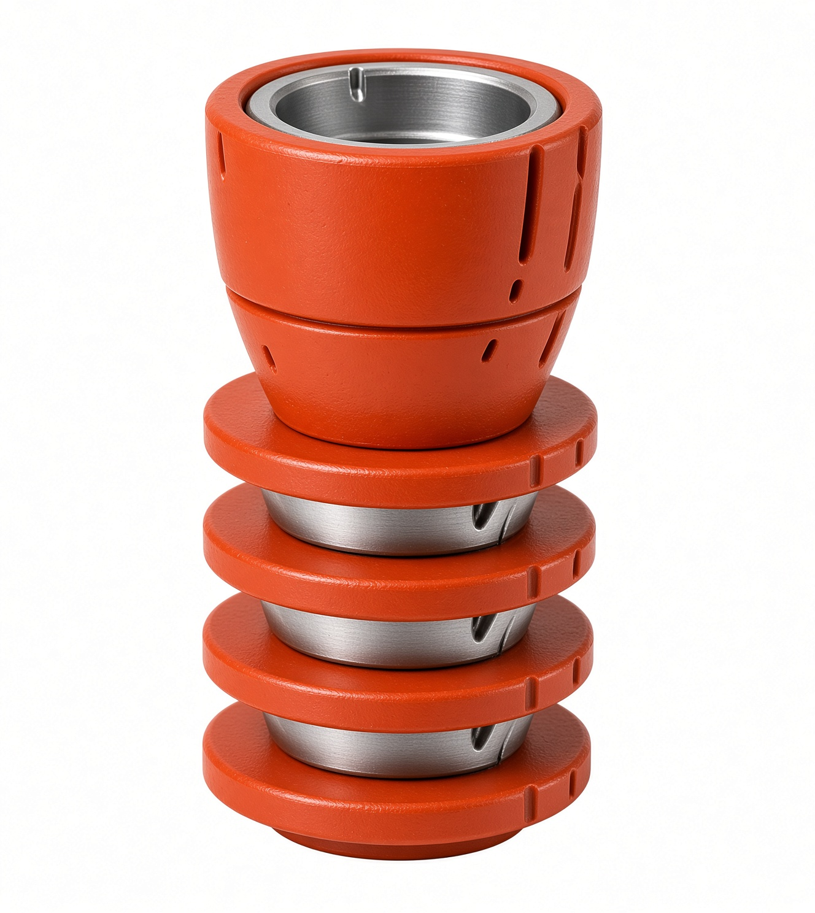
The bottom plug rides ahead of the slurry until it lands in the float collar (a one-way valve above the shoe). That valve is why empty casing floats in the mud while you run it, and why mud cannot U-tube back up the inside. Pressure ruptures a disc in the bottom plug; slurry exits the shoe and climbs the annulus. Planned volume out, then the top plug with mud behind it. When top hits bottom the annulus is full of cement. Pumps off, WOC 8–12 hours, then you drill out plugs, shoe and the cement on bottom. A temperature log can find the top of cement behind pipe because setting cement gives off heat.
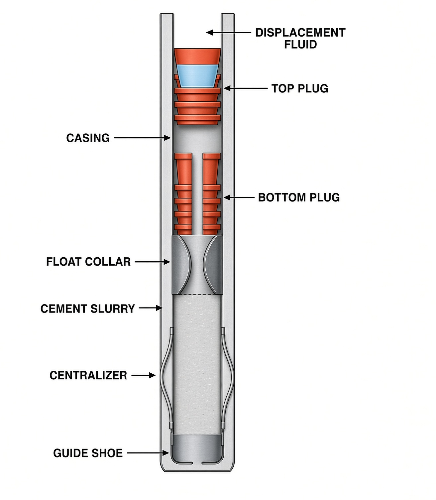
Multistage cementing splits a long annulus into jobs: pump the lower section, open ports in a coupling higher up, cement the next section. One-shot pressure on a long string would be too high.
The casing program is a telescope, planned before spud: drill, case, pick up a bit at least ½ in. smaller, drill deeper, case again. Every full casing string returns to surface—biggest/shortest outside, skinniest/longest inside.
- Conductor: fat and short (onshore ~16 in., offshore 30–42 in.), drilled or pile-driven. Mud-return path; keeps the mouth from caving; isolates shallow water and gas. Shallow-gas BOPs sit on this pipe.
- Surface: often 13⅜ in., deep enough to hold unconsolidated dirt and protect aquifers; depth is often a regulation.
- Intermediate / protection: typically 8⅝ in., only if a problem cannot be carried to TD (overpressure, salt, thief). Example: heavy mud through overpressured Atoka, then this string seals Atoka so Morrow can be drilled with light mud.
- Production / oil string: last pipe, often 5½ in., down to the pay.
A liner is the same pipe but it stops short of surface and hangs on slips inside the last casing—deep wells use it so you do not buy a full production string you only needed for the bottom few thousand feet.
MIT (mechanical integrity test): shut in, pump to max casing pressure, watch. A drop means a leak. Bad casing can lose millions of barrels into unintended zones.
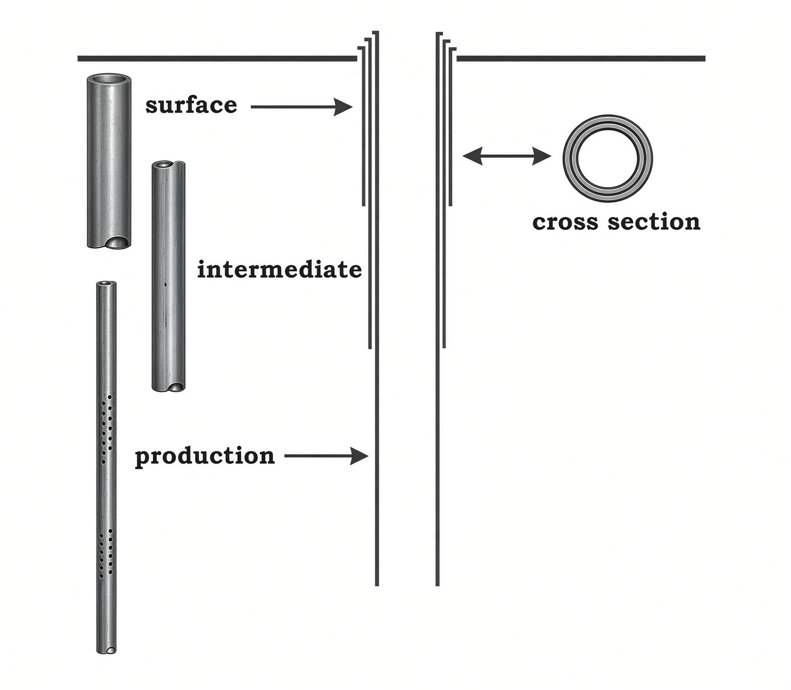
Bottom-hole completions
Casing gets you to the reservoir. It does not, by itself, let fluid in. The bottom-hole completion is the conversation between pay and wellbore.
Open-hole / top-set / barefoot: case to the top of the pay, drill the pay, leave it naked. Cheap, and common when the field is already known. Soft rock will cave and bury the hole. You also set that last pipe before the bit has seen the pay, so a dead zone means wasted casing.
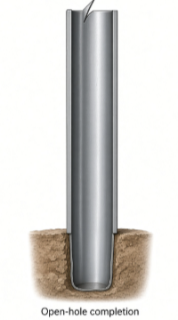
Gravel pack (loose sand that would flow in): same as open-hole to the top of pay, then an underreamer opens a cavity. Well-sorted coarse sand is pumped in a fluid that leaks off; the sand stays as a permeable filter. A slotted or wire-wrapped screen liner sits in that pack: fluid through, grains not. Prepacked liners already hold resin-locked gravel. If the problem is sloughing shale rather than sand, an uncemented slotted liner in open hole is the usual patch.
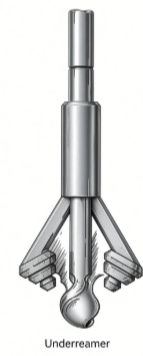
Set-through (what most modern wells, and frac, use): liner or casing is cemented through the pay, then perforations are shot through steel + cement + a short way into the rock. A perforating gun runs on e-line or tubing. Old guns fired bullets; now a shaped charge makes a gas jet—built either for a fat hole or a long one. Guns are expendable or retrievable. Pattern is shots per foot and phasing (angle around the pipe, e.g. 60°). Several zones in one well are just several perforated intervals, later isolated with packers. Horizontals rarely drag a full casing string through the build; they stay open-hole or take a slotted / cemented liner and then perfs. Frac fluid enters through those holes.
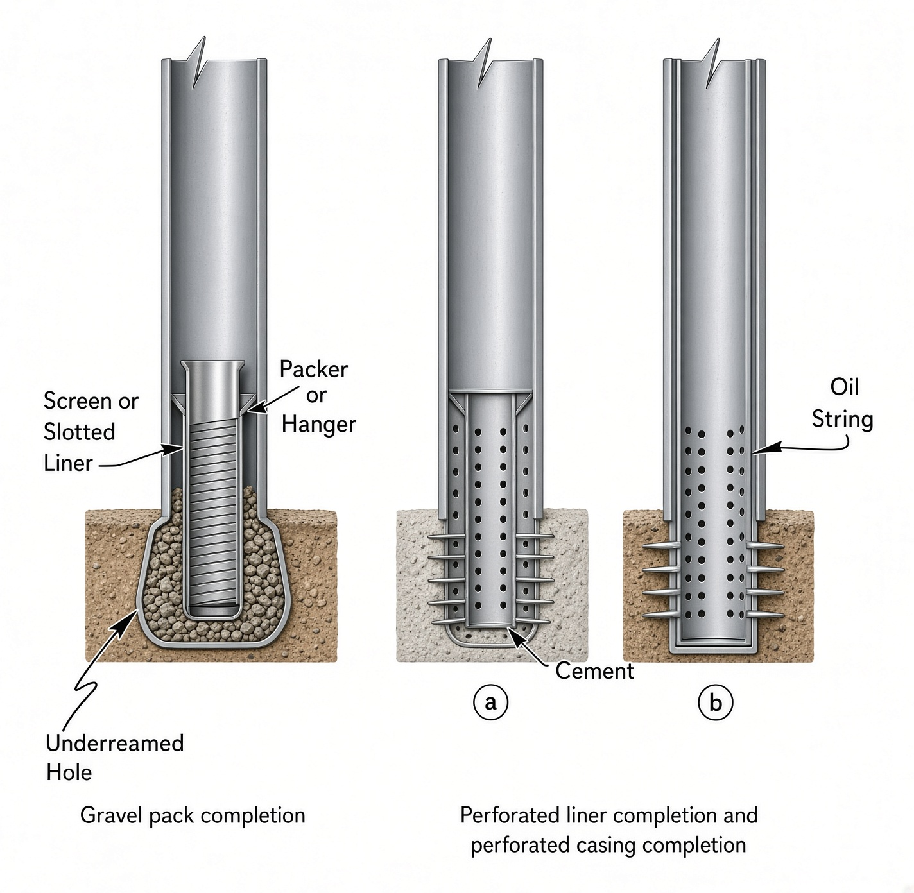
Expandable casing and liner
Each new string is smaller than the last, so a deep or long lateral ends up with a tiny ID. Expandable pipe is run normally, then an expander plug is pumped through and the OD grows permanently up to ~30%. Elastomer on the outside can seal against the hole. Same tool isolates water, fractures, losses or sloughing shale without stepping down another full size. A monobore well keeps ID almost constant top to bottom so you can run larger tubing, produce harder, and still work the well later.
Tubing
Tubing is the small consumable string (1¼–4½ in., ~30 ft joints) hung inside the production casing almost to bottom. Produced fluid is meant to travel inside it, not up the casing. A packer near bottom seals the casing–tubing annulus and centres the string. Casing is cemented and miserable to repair; tubing can be pulled on a workover. The annulus is often left full of treated water or diesel so produced fluid never sees the casing wall. If a pump will shake the string, a tubing anchor ties it to the casing. A seating nipple is a restriction that catches tools you drop. Very high-rate wells sometimes skip tubing and flow up the casing (tubingless). Offshore, a subsurface safety valve in the tubing stays open only while pressure or a hydraulic line holds it; lose that and it closes.
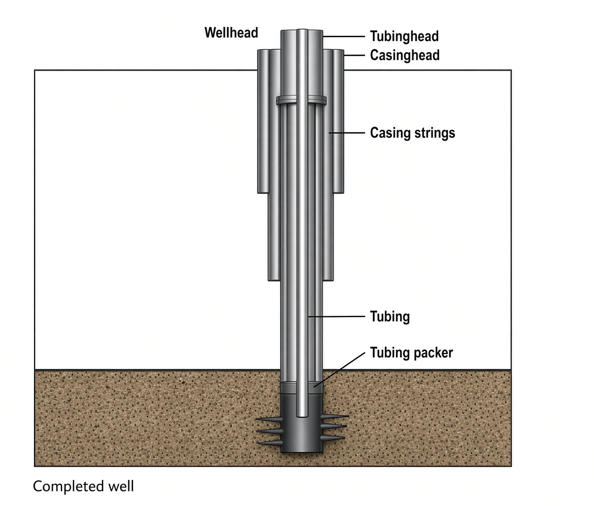
Wellhead
The wellhead is the permanent steel fitting at surface, usually welded to conductor or surface casing. Everything hanging in the hole lands here. Each casing string gets a casinghead and hanger, stacked biggest at the bottom, each with an annulus outlet. Every time you case deeper, the BOP comes off and is nippled onto the new head. A unitized head puts all strings in one body. The tubinghead sits on top, hangs the tubing and seals that last annulus. Wellhead equipment is that stack plus the tree, stuffing box and gauges—support, seal, control.
Chokes
A flowing well is not produced wide open. A large drawdown next to the sand lets gas break out of the oil and block pores, and you dump reservoir pressure you will never get back. A choke forces flow through a small orifice. Smaller hole, lower rate. Fixed (positive) or adjustable, at surface or downhole.
Surface equipment
Gas wells, and a few oil wells (~4% in the U.S. in the book), flow on their own. What you see is the Christmas / production tree: master valve low on the body shuts the well in an emergency; the wing is the side takeoff to the flowline (two zones get a double-wing tree); a wing valve starts and stops that line; a swab valve on top opens the bore for wireline; a gauge at the crown reads tubing pressure. Most U.S. oil wells (~95%) never flow to the beam—fluid stands part-way up the tubing—so you install artificial lift. A flowing well can join them years later when pressure dies; that job is putting the well on pump.
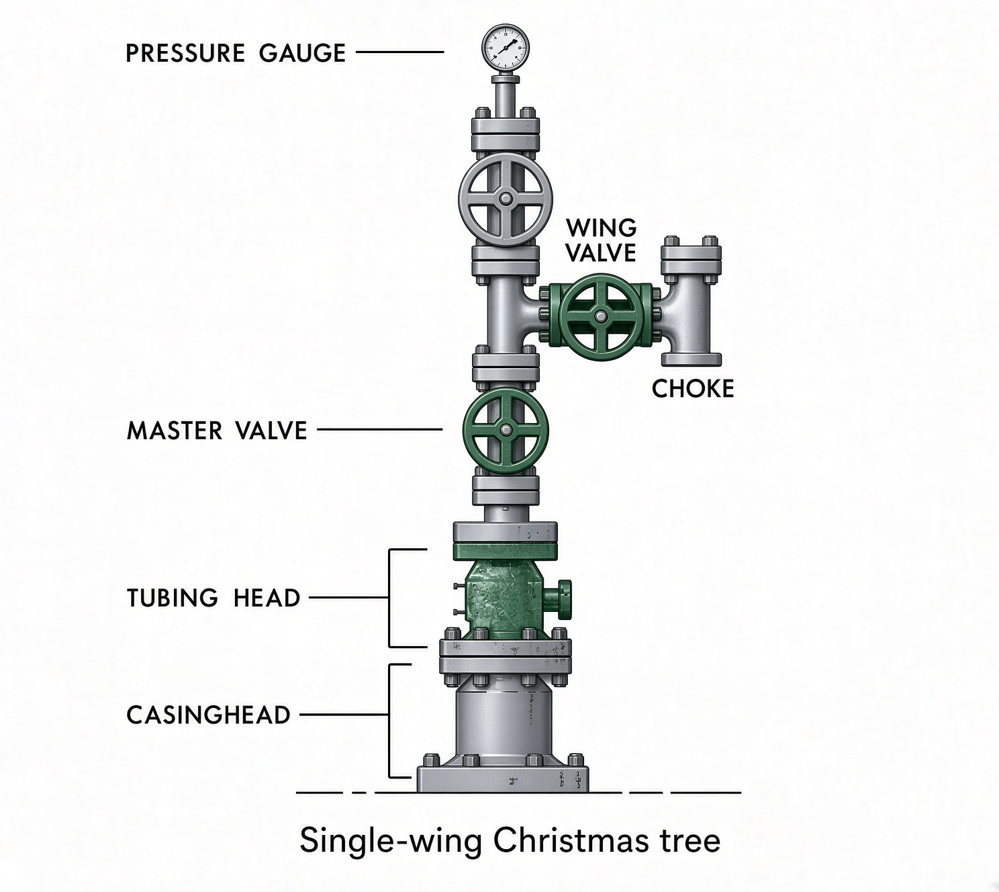
Sucker-rod pump
This is the nodding horse: a downhole pump on the tubing, a beam unit at surface, and solid rods in between. The pump has a standing valve (fixed) and a traveling valve (moves)—both one-way (ball on a seat). Each upstroke lifts the liquid column, typically 10–20 times a minute. Insert / rod pump (the usual) runs in through the tubing and anchors on bottom—smallest capacity. Tubing pump builds the barrel into the tubing string. Casing pump is a large insert that moves volume up the casing.
At surface a walking beam pivots on a Samson post. A motor turns cranks through a gearbox; pitmans nod the beam. Counterweights take the dead weight of the rods. A horsehead and bridles keep the pull vertical. The top rod is a smooth polished rod through a stuffing box so the wellhead does not leak. Rods are ~25 ft, ½–1¼ in., graded by API; couplings and guides keep them centred. Pony rods trim length. The string can taper thinner with depth.
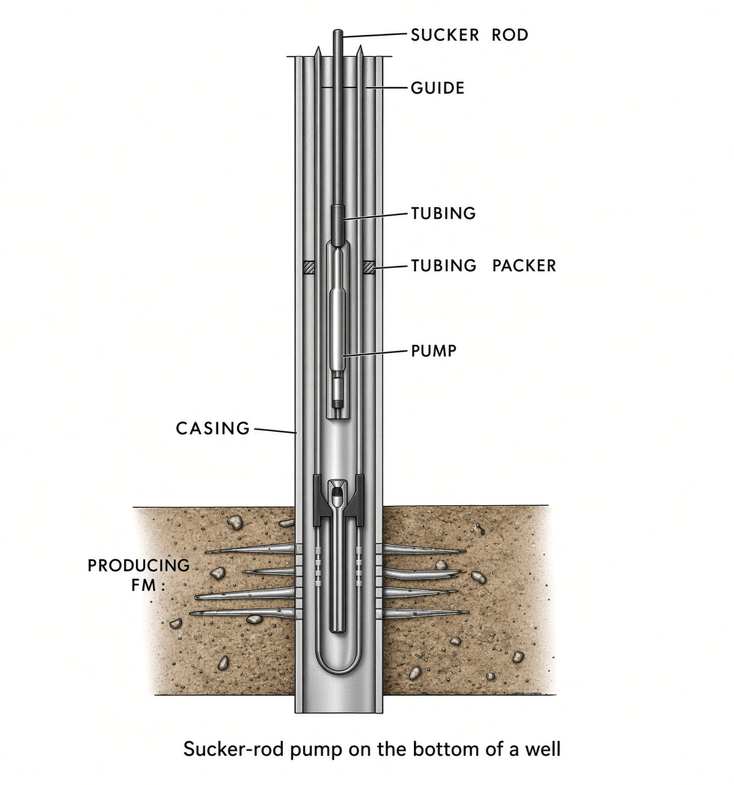
Gas lift
Compressed gas—usually gas the well already makes—is injected into the casing–tubing annulus. Valves spaced on the tubing open and let that gas into the stream: it dissolves and forms bubbles, the column gets lighter, and liquid is pushed to surface where the gas is recycled. Almost no moving parts and little surface kit; cheap when one compressor serves many wells. It only works well on relatively shallow holes. Offshore wells that need lift are usually gas-lift. Low-rate wells run it intermittent instead of continuous.
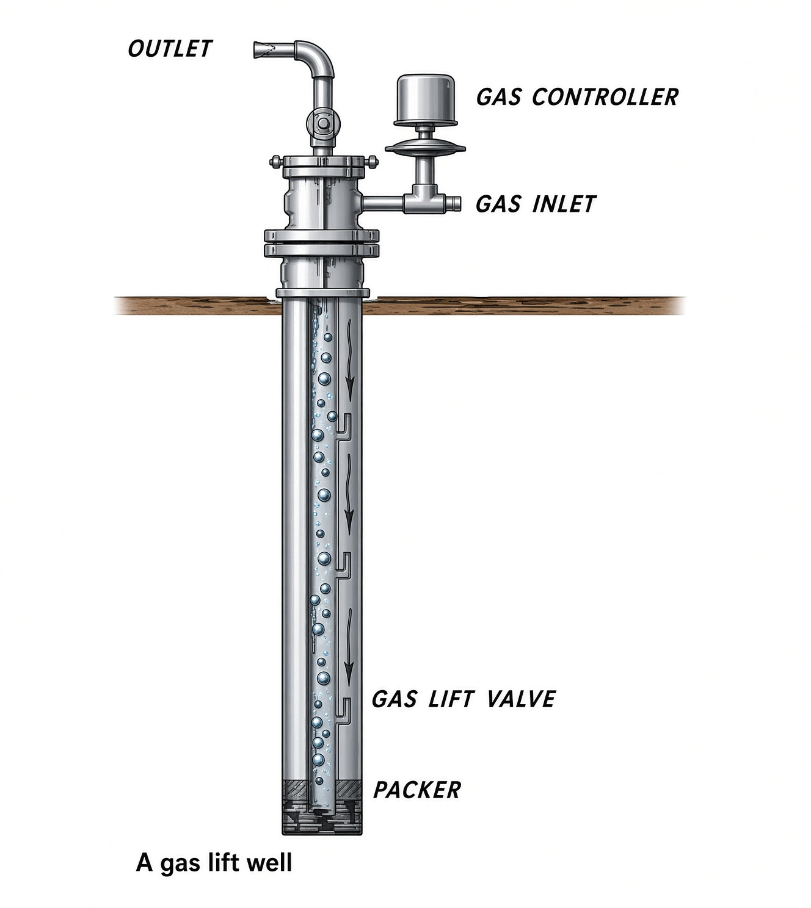
Electric submersible pump
An electric motor and a multi-stage centrifugal pump sit on the end of the tubing. Power comes down an armored cable strapped to the pipe from a surface transformer. Speed is variable so you can match rate. This is the tool for large liquid volumes and for crooked or deviated holes. Free gas in the pump kills efficiency, so a separator is often run below it.
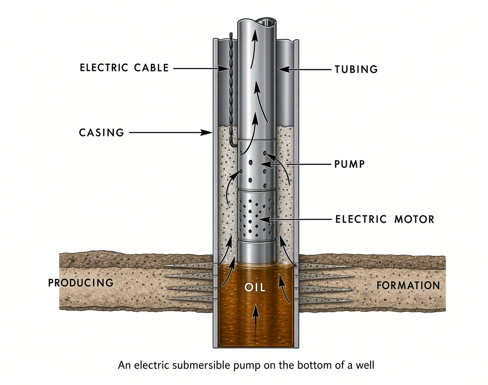
Hydraulic pump
Same downhole pump idea as a rod pump, but the prime mover is also downhole, driven by high-pressure power fluid (usually crude from a tank) pumped from surface. Spent power fluid and production come up a second string (parallel-free) or up the annulus (casing-free). The unit can be fixed or free (circulated in and out) and open (fluids mix) or closed. Most field pumps are free and open. Book’s U.S. mix: about 82% beam, 10% gas lift, 4% ESP, 2% hydraulic.
Multiple completions
Two or more zones in one well can be commingled up one string. They are usually kept separate. A dual completion uses two packers and two tubings—or one packer and one zone up the annulus. A flowing dual gets a double-wing tree; a pumped dual gets two beam units and two rod strings. The book treats triple as the practical maximum in one wellbore.
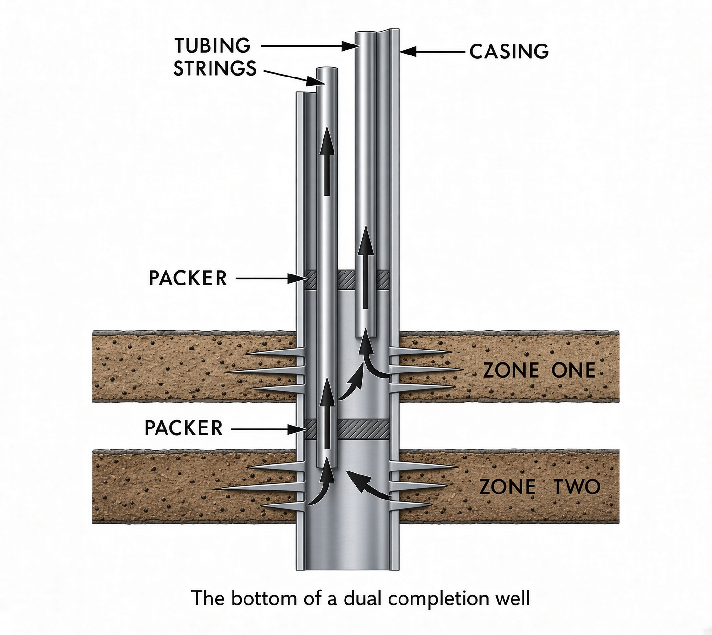
Intelligent wells
Downhole sensors read rate, pressure and GOR, and an adjustable bottomhole choke (usually hydraulic, auto or manual) pinches the zone that is watering out or flashing gas without pulling the completion.
For frac, the chain that matters is: casing program → cement in the annulus → set-through pipe across the pay → perforations (spf and phasing). Frac fluid enters through those holes. Tubing, tree and lift are how you produce after the rock has been opened.
Key terms
- Casing program
- Nested strings: conductor, surface, intermediate, production / liner.
- Primary cement
- Slurry pumped with wiper plugs to fill the annulus and isolate zones.
- Centralizer
- Device that keeps pipe centered so cement goes all around.
- Perforation
- Shaped-charge hole through casing + cement into the pay.
- Packer
- Seal between tubing and casing near the producing interval.
- Christmas tree
- Surface valve stack that controls a flowing well.
- Artificial lift
- Beam, gas lift, ESP, or hydraulic pump when the well will not flow.
- Dual completion
- Two zones produced separately in one wellbore.